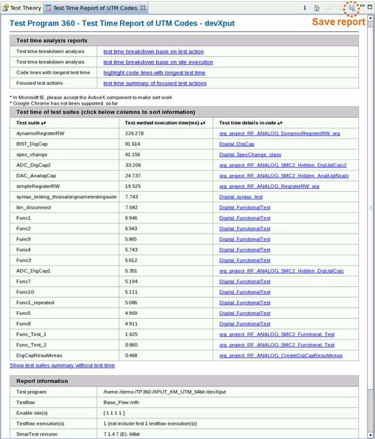

Test Time Breakdown Analyzer
Introduces how to start, set up and execute the Test Time Breakdown Analyzer and view the result report.
About this task
The Test Time Breakdown Analyzer is a GUI tool which can summarize and break down the test time of the test method code.
It is supported with SmarTest 6.5.4 version and above on Red Hat 3 and Red Hat 5 operating systems (32-bit and 64-bit). SmarTest online environment is required if you want to get real test time.
Its functionalities include:
- Break down test time of test method codes with the resolution of 1 us and the accuracy of ±10 us.
- SMC threads timeline analysis.
- Highlight the most time-consuming codes and test actions.
- Test time analysis of multi-site execution.
- Code-based test time breakdown report.
- Calculate the test time of the specified test method code block.Note Test Time Breakdown Analyzer does not analyze the codes outside of the test method project directory and does not show the test time of background threads because the execution of background threads can extend to a very large number of test suites.
Before you begin
Make sure:
- You use the "S&S_TP360_Plus_SOC" license.
- You use SmarTest version 6.5.4 or above.
- The test program use UTM test methods, and the UTM source code can be built.
Procedure
Results
The following screenshot shows the Test Time Breakdown report in the GUI. By default, the report file is generated in the directory:
/tmp/.vda/demo/tma/tmp/TMA_Report/TP360_UTM_TestTimeReport/
To find out more about the report, see Review Report of Test Time Breakdown Analyzer.

Functional changes
- Introduced in SmarTest 7.3.2